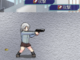

シルバーセカンド開発日誌
■
2009-11-25 (水) 共通イベント、開発再開！▼この記事でブログがついに200件になりました！パチパチ！
ということで今日も変わらずシルフェイド学院物語の続報です。
今週はアニメーション一通り作って、フォースに対応した
AIの大改造後、共通イベントの作成に移りました。
必要なイベントリストを作って全体の流れをイメージしつつ、
ぼちぼち中身の文章も作っている最中です。
微妙にネタバレしないようにすると、
なかなか画面写真を公開できないのが残念！
とりあえず今回はこれで。

オカルト研究会、うさんくさい人が歓迎してくれます。
オカ研は、おそらくフォースを教えてもらえる場所になりそうです。
現代社会では、超能力の居場所がありませんからね。
【今回、作業していて思ったこと】
何の憂いもなくシナリオ作業できるようになると凄く楽しいです！
というのも、これまではキャラクターや
スキル・システムに不確定要素が多くて、
どうしようか迷いながらのストーリー開発だったのですが、
いざスキルと必要システムを一通り作って、それなりにゲームとして
成立する状況になると、ストーリー作りが途端に面白くなり始めました。
プレイヤーさんのモチベーション維持を
行うのに重要な「報酬」が準備できて、物語としてだけでなく、
ゲームとしてのあれこれ考えようが出てきたおかげで、
ストーリーを作ることの面白さを
感じられるようになったのかもしれません。
ってこれじゃ何言ってるか分からない気がしてきた。
たとえばシルフェイド幻想譚では、なるべく全てのイベントで、
イベントこなすことによって得られるゲーム的な
報酬（武器・仲間・お金etc）を作ろうと意識していたのですが、
今回も割と似た感じで作れそうで、ワクワクしているのです。
たとえシーンとして有っても、それがゲーム的に
何も関係ないとなるとちょっとガッカリしてしまいますもんね。
これまでは、「スキル」や「特殊効果を持ったアイテム」などが作れず、
とりあえず「好感度」という報酬をあげることしかできなかったので、
ちょっとフラストレーション溜まりがちで
モヤモヤしていたところもありました。
もちろん、キャラと仲良くなって照れたりする反応を
見るのも楽しいのですが、
それに加えて新しい技を教えてくれたりしたら、
なお面白いじゃないですか！
とりあえず、こりゃ今後の開発では、「作る順番」ってのも
意識したほうがいいかもしれないなあ、ってことが分かりました。
システム的な部分や、スキル・アイテムなどを最初に考える、
ってのは、案外、間違っていないやり方だと思います。
ただ、そればっかりやるのも苦痛なんですよね。
結局、精神的に苦労するのは、
ある程度完成するまでは変わらないのかも。
以下は気になったコメント……
と思ったらFC2の拍手コメントが今真っ白です。
とりあえず、いま手元にメモれてる分だけ。
＞拍手返信見て思ったんですが、普段フンドシなんですか？
フンドシですよ。
こんなコメントしか覚えてない自分のアホさが泣けます。
い、いえ、決してコメントが嬉しくないわけじゃなくて……！
＞バトル要素と武器情報に胸が高鳴りました！！！！
＞何を装備するか戦略的に考える楽しみもありそうでワクワクします（略）
＞あ、あとフンドシって食い込みそうで食い込まないんですね。
＞小さな驚き！
付け方にもよりますけど、お尻側の布を前に通すだけなら
スースーだし食い込まないし締め付けないしで、結構好みです。
＞ガトリングとかロケラン（ロケットランチャー）も希望です
＞銃があるならぜひガトリングを入れて欲しいです。
ガトリングいいですね！ ただ発射はとりあえず一発ずつです。
連射したい場合は、「全弾発射」コマンドで最大15連射できますよ！
コマンド4つ全部に入れたら1ターンに60回攻撃できますね。
ズドドドドドドドドドドドド。
＞あれ？ってことは敵も味方も
＞銃で傷つくレベルの頑丈さなんですよね？
＞銃で負傷するような人が空から落っこちたらブッシャァァァって
＞なるんじゃないですか？
何だか観点が逆のような気もしますが、
シル学に出てくる銃はゴム弾です。
主人公は空から落ちても大丈夫な未来を計算しつくされた上で
降下させられているので、まったく問題ございません！ ここ一週間はスキルの実装作業を行っていました。
現在はアニメーション制作の真っ最中です。
それが終わったら新スキルに対応したAI処理！サブ作業も案外長い！
今回はシル学で新たに出たバトル要素についてご紹介。
【射撃武器】
シル学では「格闘」「手持ち武器」「射撃武器（銃）」の
三種類の武器があり、そのうち射撃武器には
「装弾数」のパラメータが設定されています。

射撃武器は「攻撃」するたびに弾が一発ずつ消費され、なくなると
「リロード」コマンドを実行する必要があります。
弾丸そのものは無限に使えますが、たくさん弾が入ってる銃は
装備していると行動が遅くなったりするので、
その辺のバランスを考えて装備を整える必要があります。
もちろん連射できるスキルなども完備。
【今回、作業していて思ったこと】
武装やスキルの幅とは、すなわち「パラメータのバリエーションの多さ」
なのかなあ、と感じました。パラメータのバリエーションっていうのは、
たとえば武器だったら「攻撃力」「命中率」などがそうですけれど、
それ以外に
「装備時の行動速度の変動（例：重い武器は行動遅くなる）」
とか、
「筋力が足りないときには、命中率が？％減少する」とか、
「装弾数」、「ターン中で、連続攻撃するたびに命中率が？％ずつ減る」
なんて項目なんかがあれば、攻撃が上がるだけの武器だけじゃなく、
「一撃の威力は凄いけど連続攻撃しようとすると
命中率がガクンと下がる武器」
「筋力があまり必要ないので、筋力低いキャラでも役に立つ武器」
「弾が一発しか入らないけど一撃必殺」というような
色々なバリエーションが生み出せるので、
装備一つ取っても、趣味や戦術に応じて取捨選択の幅が出せそうかな、
と感じました。単純な上位互換がない装備というのは、
頭を使って適材適所にあてはめられるので、個人的に好きです。
以下は気になったコメント返信。
＞システム案の要望って、まだ大丈夫でしょうか？
＞前のターンと同じ行動をワンボタンで出来る機能っていうのは、
＞実装できますかね･･･
これは便利そう！マウスの真ん中ボタンを押したら前ターンの行動を
再入力できるようにしてみます。ご意見ありがとうございました！
＞ところで今更なんですが、公安委員会って誰が攻略できるんですか?
とりあえずセトとか。ものすごく公安向きっぽい性格だと思います。
＞絶望した！ふんどしじゃなくて
＞パンツはいてるウルフさんに絶望した！！！
パンツはいてたのは食い込んでた一日だけで、
速攻ふんどしに戻りましたよ！
■
2009-11-10 (火) ゲームの部品を揃えてます▼少しでも面白いこと書きたいんですがあんまり思いつかないウルフです。
パンツがお尻に食い込んで作業に集中しにくいですとか、
そんなことばっかり報告しても意味ないですしね。
むしろ、「そういうのが聞きたいです！！」とか言われても
私としては「変態！変態！」って言うしかなくて困ります。
あげく、そんなことばっかり想定してる自分が
もうイヤですが、性分です。
ここ数日間のシルフェイド学院物語開発。
【バトルグラフィックのパーツ作成作業】
→ 男女共に、最低限のバトルグラフィックパーツを一通り揃えました。
【バトルAIの作成】
→ 手持ちのスキルをそこそこ有効活用するようなAI Ver0.5を作成。
ただし回復スキルや特殊なスキルは今のところ考慮していません。
【合成顔グラフィックの強化】
→ 合成顔パーツをちょっと増やしたり、服の重ね着機能を搭載。
モブキャラの自由度がさらに増えました。

以上のような感じで、後回しにしていた
サブシステムを延々と作ってました。
【今回の作業の中で思ったこと】
グラフィックはとりあえず時間があれば片付けられるのでいいんですが、
苦労したのはAIです。手持ちのスキルや、戦闘時の行動回数、および
残りスタミナ量（※マイナスになると次回の行動が遅れる）、
などに応じて、それなりにまともっぽく使うように作っています。
コマンド選択式のバトルは、どうしても有利な戦法ってのが
ある程度定まってきますので、「愚かじゃない行動」を取らせるなら
それなりにカンタンなのですが、状況に応じて工夫させようとすると
一気に分岐が増えて複雑になります。今のところは、
相手に攻撃する系統のスキルばっかりしか用意されていないので
何とかなっているのですが、バリエーションが増えてきたら
またそれに応じて、色々と改善していく必要がありそうです。
手持ちのコマンドを、状況や相手に応じて、色々考えて使える戦闘が
面白いんだろうなあ、と今さらながらに思い直しているのですが、
そういうのもなかなか難しいです。最終的に、
そういうのに仕上げられたらいいなと思いつつ、
何はともあれスキルバリエーションを増やそうと思います。
にしてもスキル増やすのは楽しい！戦闘の幅がどんどん広がります。
でも、武術運動部編で試合中にフォース使って怒られないか心配です。
S.EXPで強化して「気付かれずに発動できる」能力を付与しないと
使えないとか、そんなのにしたらちょっと盛り上がるかな？
一応、使おうと思えば使えるけど大変だよって感じで。
【残りのサブ作業】
・大量のスキル追加作業
・それらのスキルのエフェクト画像の作成
・それらのスキルを考慮した、バトルAIの強化
【残りのメイン作業】
・公安委員会編のストーリー＋それに必要な顔グラフィックと、
特殊な敵キャラグラフィックの作成。
・地歴探求部編のストーリー＋それに必要な顔グラフィックと、
特殊な敵キャラグラフィックの作成。
項目別にまとめてみると、だいぶ少なくなってきた気がします。
ゴールが近くなると燃えてきます！よっしゃああ、がんばりますよー！！
シルフェイド学院物語公式ページにもときどき独り言的に
開発状況を載せておりますので、よかったらそちらもどうぞ。
以下は気になったコメント返信です。 ▼追記を開く▼＞本編に出る予定が無くても、モノリス様他女神勢の
＞グラフィックとか用意される予定なんですか？あると嬉しいです。
まだ作ってはいませんし、絡む話も構想の段階なんですが、
やっぱりその辺の他作品のメインキャラクター画像も欲しいですよね。
余力を見つけては、顔グラフィックも色々作ってみようと思います。
＞この作品の主人公は幻想譚のように
＞プレイヤー＝主人公のスタンスですか？
＞それともエシュターやシシトの用に「主人公」というキャラクター？
前者です、「あなた」が主人公ですね！
＞要するに靴下だけの女のキャラも作れるんですね！
＞ところで、シル学は2000円前後の予定なんですか？
靴下だけの女キャラも作れますがバトルグラフィックだけですので
Ｒ指定とかそういうことにはなりません。
お値段は、開発が伸びすぎない限りは、
とりあえずその予定です＞2000円
＞でも全裸率が高そう。もしくは裸ネクタイ
もちろん裸ネクタイも可能です。ってそんなんばっかりですかー！？
＞じゃあ、受験生なのにシルノ購入した私は偉いんですね！
受験がうまくいっていれば万事OKだと思います！
＞絆はクリアしたらそのまま引継ぎは出来ないのでしょうか？
ゲームが始まった瞬間にラブラブという事態になるので、
引き継ぎは基本的にできません。■
2009-11-03 (火) バトルグラフィック作成中▼シル学公式ページのトップ近況にも書いていますが、
今のところはバトルグラフィックを作成中です。
いくつかコピペで済むパーツもあるとはいえ、
1パーツにつき28パターン描く必要があるので結構時間がかかります。

これまでに描いたパーツで、作れるキャラの見本。
パーツごとに色が変更できるようになってます。
髪だけ・シャツだけ・スカートだけ、靴だけとかいった具合に。
これらのパーツは、皆さんがキャラ作るときにも使用可能です。
ひとまずは、最低限必要そうなパーツを作っておいて、
次に「バトルエフェクト」と「武器の画像」もいくつか作成。
その後に「キャラごとの服装」を設定したり、
「共通イベント」を作成したりします。
あ、「戦闘時の行動選択AI」も作らないと。
それが終わったら、あとは「公安委員会イベント」と
「地歴探求イベント」を作って完成！
作るものの種類そのものは
両手の指の数におさまるようになってきたので、
どんどんゴールが身近になってきた気がします。といっても、
これだけの項目数でも、平気で何ヶ月もかかっちゃうのが
ゲーム開発なんですけれど。しばらくは、地道な作業です。
現在の画像作成作業は、あまり面白さに関与する部分を
手にかけているわけではないので、なるべく
手早く済ませたいと思っています。
以下はシル学（＆動画）についていただいたコメントです。
＞来春公開予定と言うのも受験生には嬉しい所……！
＞受験が終わったらカーニバルだぜウッホイ！！
＞ところでシル学プロトタイプ動画Ver0.7版が僕のＰＣでは、
＞どうも表示されないようなのですが……前のは出たのになぁ……
＞うちのＰＣがパッパラパーなのですかね……。うぅ……。
おわわわ、ご迷惑をお掛けします。MP4の動画なので、
FlashPlayerのバージョンを新しくしないと再生されないかもしれません。
前回のシルノは１２月に公開したので、受験生の皆さんには
ちょっと微妙なシーズンだったかもしれませんね。
＞そういえば絆はかけもちできるんですか？
２つくらいまで同時にかけもちできるようにする予定です。
＞来春ごろには十分できそう、とのことですが、折角ですので
＞記念すべきエイプリルフールに公開してはいかがでしょうか？
それいいですね。考えておきます！
＞2006年10月12日に買ったウェブマネーがやっと使える！
＞私は三年間待った、テラーズシルフェイィィィド！！！
すみません、お待たせしました。
＞最初のどこに落ちるか？の「風に任せる」って2週目3週目で
＞1週目と同じとこに落ちることもあるんでしょうか。
実は「風に任せる」は、ランダムではなくて、
学院直通という選択肢なんです。
ちょっとあの書き方だとまぎらわしいので、選択肢を
「そのまま落ちる」に変えておきたいと思います。
＞このＰＶに使われている音楽ｍｐ３で欲しいのですが、
＞どうすれば手に入りますかね？昔聞いたときも結構
＞好きだったけど、今一度聞いたらツボ過ぎました。
PVの最後に書いてある音楽使用元へゴー！
有料素材なのですが、サンプル音声もダウンロードできると思います。 ■
2009-10-28 (水) シル学公式サイト公開▼超絶絶好調！！なので、ちょっと疲れて開発進まなくなったときにも
動画編集とかシル学広報サイト作成とか色々やっておりました。
【シルフェイド学院物語 公式ページ】 公開！
シル学の完成はもう少し先になりそうですが、
紹介用として周知のために置かせていただきます！
リアルタイム更新の「開発近況」も、ときどきアップされるかも。
動画も、とりあえず前の焼き直しなのですが、
シル学プロトタイプ動画Ver0.7版ということでアップしてあります！
前にアップしたのと、そう代わりばえはしませんが、
最初の依頼者であるサラさんがちゃんと服を着るようになってたり、
スキルを強化する機能が付いていたり、イシュテナ先生が
担任として出てくるところが今回の動画のメインです。
以下にも載せておきます。
【現在の状況】
ここ数日間は、
「シル学テストプレイ開始 → すぐに修正を要する項目が発生する →
いっぱい修正 → テストプレイ開始
→ すぐ修正を要する項目が（略）」
という感じで、これまでいっぱい放っておいたままのバグのツケを
払っている最中です。が！ 一応どんどん完成品に近付いています。
次に共通イベントが一通り終わったら、後は公安委員会の必須イベントと
地歴探求部の必須イベントを作るだけでひとまずの完成！
地味に進んでます！
これまで一つのクラスを作るのに長引いていたのは、
基本機能が足りなかったり
グラフィックの数が少ないことによる足踏みが
多かったのが大きいのですが、今の段階になって
ようやくそういった「細かい穴」が全部ふさがりつつあるので、
完全に意識をシナリオ面に投入できるようになり、
徐々にゴールも見え始めています。
でも、一回完成したーと思ったゲームには、実は致命的に
面白くなくさせている要素や、
ひとひねりで超面白くなる要素が隠れてるので、
それをじっくり見出す期間もしっかり取る予定です。
たとえばシル幻のS.EXP要素は、実は最後の最後に
何気なく入れたものなんですよ。
あれだけで成長に自由度が増えるので、
面白さはS.EXPがなかった頃の1.8倍くらいになったと思ってます。
それと、ウディタ紹介動画もニコニコ版をアップしてみました！
以下は拍手コメント返信。
＞武術部編、終わったんですか！１クラスに１月半程度だとして、
＞テスト諸々合わせて来春くらいまでには出来ますかね･･･？
できます！ ゴールも見えてきましたのでやれます！
と、そろそろ自信たっぷりに言えるくらいにはメドが付いてますよ！
＞一部の男性キャラとは絆を結べないということは
＞反対に一部とは結べるというわけですね…
アー！
じゃなくて友情ですよ、友情。
＞ところでプチリスたんは出ないのですか？
今まだモノリス勢に手を付けられるかどうか分かりません！
でも入れたいとは思ってます。モノさんとプチさんくらいは。
＞ちょっと聞きたいんですけど体験版とか出るんでしょうか？(略)
＞ただシルエットノートみたいに、シナリオ機能がついてると
＞なるとそれだけで満足しちゃう方もいるかもしれませんねぇ。
出ますよ！シナリオ作成機能を付けるかどうかは未定ですけれど。
またウェブマネー買いに行くシナリオになるかもしれません。
バイトしてお金ためて、強くなってコンビニの前に
仁王立ちしてる強盗を倒して買いに行くようなような、って、あれ？
これからのシェアウェアの体験版が全部そんなノリになったらどうしよう。 ■
2009-10-04 (日) バトルグラフィック▼ということで最近旅行まみれでこの数日はボチボチ進行中です。
あげくに引っ越しする予定も入っているので、少し忙しくなりそうです。
そしてシナリオ作ってる最中だと、語るネタがありません！
でも中身はどんどん良くなってます！ようやく、作者の私が
「色々な遊び方ができそうでちょっとワクワクしつつある」
と思えるくらいまで面白さが引き上げられています。これですよこれ！
とりあえず現在いじっているグラフィックでも掲載しておきますね。

女性の素手バトルモーションです。
（服着てないのはただいま修正中で重ねる服画像がないから！）
とりあえず必要最低限のデキってことで。公開後に誰かが
リファインしてくれるのを期待しているとか思ってないんだからね！
といいますか、画像でも何でも、
さらによくなるものや、面白いシナリオなどは、
公式認定ユーザデータとしてゲーム内から直接ダウンロードできるような
システムにする予定です。「時間が経つごとに、ゲームに広がりが出る！」
それがシルフェイド学院物語の真骨頂です！
海外のゲームのMOD（追加データ）の欠点として、
「データの導入が大変」という一面があるので、その辺をカバーできたら
最高のユーザ参加型開発環境になるんじゃないかなと期待しています。
色々ゲーム遊んできたのを、ここらで活かせたらいいなあ。
以下はコメント返信。 ▼追記を開く▼＞シル学は、１月４週制との事ですが、各季節毎に、
＞追加ボーナス週を１週分設けては如何でしょうか？（略）
ええ！？それは誤解です！
この点についてはまだ説明もしてませんでしたけど、
シル学は1ターン（一回スケジュール実行ボタンを押したとき）の
経過期間が「7日」で、きちんと一日ずつ経過していくタイプなので、
ちゃんと2/14にバレンタインになったり、休日と祝日で
自由行動の内容が微妙に変わったりします。
（休みの日に学校に修練しに行っても先生がいないとか）
＞シルフェイド学院物語ですが「絆」という特に友好値の
＞高い状態がありますよね。この「絆」状態のキャラと一緒に
＞戦闘や仕事を行うとプラス補正があったりするのでしょうか？
はい、忘れていなければそういう要素も入る予定です。
＞恋愛だけが人生ではないさー！
＞とか分かったようなことを言ってみます（＾▽＾）
＞シル学、面白いゲームに仕上がりそうでワクワクですよ！
＞とことん楽しんで 創ったものはきっと他の人も
＞とことん楽しめるものに成長していくと思うので、
＞産みの苦しみも楽しみながら頑張ってください！！
激励ありがとうございます！ヒッヒッフー言いながら頑張ります！
恋だけが人生じゃないですよね！ うん！ といっても私の場合、
すでに創作に恋しちゃってるので、「私と開発、どっちが大事なのよ！」
とか言われたら「創作」とか「ファンのみんな」って即答しそうで恐いです。
待ってくれてるから頑張れる、皆さんには本当にお世話になっています。
＞ところで前回の記事に関してなんですが、ナダさんが
＞中退ってナダさんの身にいったいに何があったんですか。
ナダさんが優秀すぎて早期卒業しちゃったに決まってるじゃないですか！
じゃなくて3年分のシナリオを1年に圧縮したら
11月に中退イベントが入っちゃったりしますよいう
ジョーク気味な話です！ 最終的にどうなるかは分かりません。
＞ところで、シル学には夫に物足りなさを感じて悶々としている
＞イシュテナさんは登場したりしないんでしょうか。
イシュテナさんは普通に主人公のクラスの担任ですが
そこまで（どこまで！？）行くかどうかは分かりません。
いざとなったらユーザの皆さまの手で、色々限界突破しちゃうような
お話も作れるので、よろしければぜひ作ってみてください！あれ？
このサイトは健全サイトを目指しています。
でもイシュテナさんはあんまり欲求不満にならなさそう。
【ウディタの更新に対して】
＞キー位置保存機能はON/OFF切り替えが
＞出来る様になっていると嬉しいです。
なってますなってます、ご安心を！
＞キー位置保存機能、すごいです！あったらいいなと
＞思っていた機能でした！ウディタリアン、使ってみます
＞（縮めてウディタンというのはどうでしょう！？…冗談です(^-^;)）
ありがとうございます！
私もいっぱい審査してて「これがないと次、腱鞘炎が激化しちゃう……」と
思ったのでコンテスト後にこうやって慌てて入れました！＞キー保存
それにしてもウディたん、ですか……
個人的にはウディ太郎も捨てがたいんですが。
＞ウディタのバージョンアップお疲れ様でした。 ちなみに、研究者や
＞開発者、芸術家などは、どうも婚姻関係を持たない傾向があるようです
＞（有名人で例を挙げると、アイザック・ニュートンや、
＞レオナルド・ダ・ヴィンチなど）
きっとお嫁さん欲しいとか思うヒマのない方々なんじゃないでしょうか。
こっちも創作活動が面白すぎて仕方ないです。困ったなあ。■
2009-09-27 (日) シル学に全力投球中▼もの凄い勢いで前回の修正項目を次々修正中です。
その脇でついでにウディタVer1.14テスト版も現在調整中ですので、
気になる方はどうぞ。シル学を作ってて「ムキー！！」ってなったところを
解消するために、非常に地味な部分ばっかり直しておきました。
しばらくは地味な修正が続きそうです。
【シルフェイド学院物語ブースト中】
にしてもシル学絶好調ですよ！やっぱりこの感情ですよ、この感情！
「これじゃ面白くないなあ」って思ってたシルフェイド学院物語に対して
具体的かつ効果的な改善点が見つかって、
「磨けば凄い人になるであろう素質ある人物」を見つけたような、
または「一生そいとげられそうな人」を見つけたかのような、
謎の期待感が生まれて元気ハツラツ、全力投球状態になっています！
私は人間に恋をしたことがありませんが、恋をすると
きっとこんな気持ちになるのかもしれませんね。
とにもかくにも、この気持ちがないと開発がはじまりません！
逆に言うと、自分の作りかけのゲームが
好きじゃないことほど辛いことはありません。
で、結局のところ、システムを削りに削った結果、
ほぼそのまま幻想譚を踏襲した形になりました。
一個前のスクリーンショットと比べると、
ちょっと変わったのがお分かりになるかと思います。

ステータス欄で自由に設定できる部分が4行分くらい余ったので、
ユーザさんの手で自由に設定できるようにしておきました。
今は「ランク」表示や「評価ポイント」の表示をしています。
また、右に表示されている太字の黄色や青の±の数値は、
直前の一週間で増減した合計値を表しています。
これで先の見通しが立てやすくなるという寸法。
あと何ターンでどうなるかくらいは、分かりやすい方がいいですものね。
あ、あと一番右下に
「クイックセーブ（今使用中のセーブデータに上書きする）」
のボタンを付けておきました。実に地味な修正ですが、
これでテストプレイの効率も上がるってもんです。
自分のゲームってなかなかテストが億劫になりがちですが、
テストプレイを繰り返すと、プレイしやすさを上げるための工夫を
せざるを得なくなってくるので、
ゲームを良くするには絶対お勧めですよ、
テストプレイ祭り。
【お絵かきイラスト集】
それと本日、皆さまからいただいた
お絵かきBBSイラスト集をアップしました！
皆さまからのアツいイラスト、いつも本当にありがとうございます！
励みになります！

クリックするとお絵かきイラスト集 Vol.16を新ウィンドウで開きます
以下は余談いろいろ。 ▼追記を開く▼【宇宙的余談】
そういえばすっかりHTVの話を忘れてました！
最近ニュースにも出てましたが、
HTVとは、国際宇宙ステーションへの補給用ポッドのことですね。
それを宇宙まで運んだHII-Bロケットの性能も凄いのですが、
HTV自身もかなり凄いブツなんですよ！
自動制御機能積んでるし与圧部もあるし。
NASAから1300枚分のケチ付けられたけど全然問題なかったぜ！
とかJAXAの人マジ凄い、凄すぎる。
そしてこの格闘ビデオのような熱い公式PV。
JAXAの中の人のプロモ作り技術は、地味に凄い気がします。
こと宇宙分野に関しては、日本の技術力がキラリと光ってますよね。
ISSの「きぼう」の入口に、のれんが付いてたのがちょっと笑えました。
以下は気になったコメントへの返信です。
＞イベントがカットされるのが勿体ないです！！（その他多数）
ああ、誤解を招く言い方をしてしまって申し訳ございません！
カットされるのはほとんどなくて、もっぱら圧縮です。
作ってない分は作らなくて済むし、
作った分は流用したいと思っています。
何より、例のウリユイベントはまだ作ってません。
そして年に一回だった合宿イベントは年に3回になります。ちょっと多い。
そしてちゃんと流用された結果、
なぜか11月頃に卒業（※中退）していくナダ先輩。
「ナダ先輩、卒業おめでとうございます！」
ナダ「あ、はい、ありがとうございます……」
のセリフが全然違う意味に聞こえて来ます。ある意味卒業だけど。
＞ウリユの子供じゃないイベント削除に泣いた野郎の数なんて、
＞日本野鳥の会でも数え切れませんよ…
ウリユの「子供じゃない」イベント削除に泣いた人たちが西の空へ向かって
飛んでいっている図が浮かびました。とりあえずウリユが14歳でも
「私……もう子供じゃないよ」とか言ってOKだと思います！
ウリユは中等部だけど思いっきり
考古学部あたりに顔突っ込んでくるかもしれません。
＞短くすると不満の声が高まるのでは？
たぶんそうだと思います。
ただ、終わったときに「あー疲れた……」っていうゲームと、
「え、もう終わったの！？まだやりたい！」と思えるゲームがあったら、
私は徹底的に後者を押し進めたいと思っています。
そしてまた、8時間分のシナリオを最後までプレイしてもらって
「もっとやりたい！」と（少なくとも私自身が）思えるゲームを作るのは、
私の今の能力と時間では難しいと判断したのもあります。
時間のない学生さんや、社会人の皆さんに、濃密な娯楽の時間を。
常にこれをテーマにしていきたいと思っています。
＞バランス等開発が大変になるでしょうが頑張って下さい。
＞そう言えば、パラメーター改造（チート）については賛成派？反対派？
＞とある同人ゲームでは反対派らしく、えげつないチート対策してあります
それどころかシル学は開発に必要な全機能が
プレイヤーさんにも開放されておりますので、
MOD機能でゲーム始まった瞬間に全レベル100にするとか余裕です。
バランス調整パッチなども大歓迎です。
スカッと遊びたい人はスカッと遊んでもらえばいいんですよ。
そういう意味では、バイキング形式のゲームが好みです。■
2009-09-23 (水) スーパーダイナミック改革▼シルフェイド学院物語を
フリゲ開発者さん（というかウディコン審査員）の
皆さんに直接見ていただいてレビュー・改善案・その他を
募ってみたのですが、
ズバッとよくなりそうな案を山ほどいただいてしまったので
しばらくまた修正に走り回れそうです。
大きな修正点は以下の2点で、
【Ａ．３年のシナリオを１年分に圧縮】
これは、実際に他人にやってもらったときのプレイ時間が
予想外に長かったことに起因しています。
ゲーム内時間の1ヶ月辺り、プレイ時間が14～15分くらいになったので、
このペースで3年やるとプレイ時間が8～9時間！！
いくらなんでも長いよ！！まだ他に2種類もシナリオあるのに！
ということでストーリーを圧縮して一年の物語にすることにしました。
2年目専用、3年目専用のシナリオはボツらざるを得ないのが残念ですが
ストックリストに放り込んで別のイベントに流用する計画でいます。
先輩イベントと後輩イベントがなくなったのと、あとウリユ（初期14歳）が
17歳になって、「私……もう子供じゃないんだよ」とか言うイベントは
残念ながらなくなってしまいました。
ショートストーリーで補完してください。
あと、1年版の何がいいって、
「毎月変わるイベントが気軽に作れる」ところ。
36ヶ月分のパターン作るのはさすがに億劫でやれなくとも、
12ヶ月分のパターンだったら割と気軽に作ることができます。
密度を超ギュウギュウにして何度でもお楽しみいただける仕様の予定です。
【Ｂ．経験値のパラメータ全部カット】

心・技・体・？という経験値パラメータが存在していたのですが、
ややこしい＆プレイヤーさんが制御できないので、
撤去してS.EXPに一本化することにしました。
「習得しにくいスキルを得るために試行錯誤する」という表現は、
イベント側で色々準備することになりそうです。
神業クラスの技を教えてもらうには秘伝の書一本がいるとか。
この辺のバランス調整を再調整する時間が必要になりそうですが
むしろS.EXPに一本化されたおかげで調整やりやすくなったと思います。
そしてプレイヤーさんもS.EXPの使い所に
頭をひねっていただけることと思います。
以上。どちらも、
自分一人では絶対にやらなかったであろう「削るべき部分」です。
人に言われないと、なかなかカット作業って踏み切れませんよね。
昔は人に言われても内容のカットなんて信じられませんでしたけれど。
でもいまは、「余分なものがあるせいで面白さが下がる」ということを
身に染みて理解できたところまで来た気がしているので、
割とあっさり受け入れることができた気がします。
どんな変更でも、ただこれだけは言えます。
これらの修正で、面白さは絶対に向上しますので、ご安心下さい！！
そうじゃなきゃ私だって受け入れませんよ。
モヤモヤしてるところに指摘をいただけて助かってます。
にしてもゲーム作ったことのある人に指摘してもらえると、
あっさり的確に「あ、それ面白くなりそう」って意見を
言っていただけるので、ものすごく助かります。
「シル学これひょっとしてつまんないんじゃないのか……」と悩んで
いまいちやる気が低下していた部分があったのですが、
今回の件で光が見えました。
「面白くないけど何を足せばいいんだろ？」
って発想ばかりに目がいっちゃってて、
上のような削る方の改善案に辿り着けなかったんですよね。
え？カットしてもいいけどウリユのイベントだけは入れろって？
以下は拍手コメント返信です。 ▼追記を開く▼＞魔界王伝の作者さん、チェーンソーゴッデスを
＞形にしてらっしゃるｗｗｗｗｗｗ
http://oden.zashiki.com/（2009.9.20の記事/ｱｰｶｲﾌﾞ）
う、うわあああ、ってデザインが素晴らしい！
元イメージとは大違いの美しさ！
↓
元イメージ

＞あ、そういえばこれもボイン記事ですね。
あ。
＞緑の肌……オヤジンジャーグリーンも精製可能なんですね!!
オッケェェェイ！！ただしずっと緑色。
＞今頃ですがウディコンお疲れ様です。
＞ウディコンへの意見なんですが、結果発表するときに
＞順位以外に「ストーリー賞」や「システム賞」といった
＞ものを授賞したらどうでしょうか？
いいですね！ ホントはもっといっぱい賞を考えていたのですが、
今回は運営に手一杯で他に何もできなかったので、
次回は色々考えたいと思います。
＞フェザーで治癒か完治毎ターン使って
＞迎撃使えば絶対死なないんじゃね！？ 案
迎撃が発動するのは確か物理攻撃に対してのみだったので、
本当の強敵であるラスボスや魔王相手（理力が主力の敵）だと
火力不足なのが難点です。
ちなみに意志マックスで幻霧を使うと
回避率ほぼ100％を叩き出せるので（スケイルなら完全に100％）、
物理攻撃してくる相手には一方的に攻撃できてしまいます。
でもそこまで戦略思いつく人だったらクリアでいいよなあ、
って思ってたくらいのＲＰＧ初めての人用養成ツール的な
立ち位置なのでそんなもんなのです。
シルフェイド幻想譚の敵の物理攻撃って軽いですよね。回避も強いし。 ■
2009-09-18 (金) シル学 武術部テスト開始▼旅行から帰ってきたら昨日39.1度も熱が出て死ぬかと思ったウルフです。
本日病院で検査してもらったところ、どうもA型インフルエンザの
薄い陽性（治りかけっぽい、とのこと）みたいな感じでした。
ていうかインフルエンザが丸一日半で治ったってアンタ。
若い体はいいなあ！
さていよいよ開発に戻りましたシルフェイド学院物語、続報です。
といっても最近行っていたのは、
テストプレイちょこっとと、それによる修正に備えて、
「イベントの修正をより素早く、無駄な労力を使わずにできる機能」
を追加したくらいなので、
皆さんにお見せするようなものが特にありません。
実に地味な作業ですが、開発においてはどうしても必要な作業です。
ゲーム開発は、いろいろ想像するところまでは面白いんですが、
作る部分の9割は地味ーな作業だと思います。それでいて
その地味な作業にも経験が要求されるので、
ドMの人以外にはおすすめしません。
でも上には上があって、どこまでも
延びしろがあるので異様に面白い分野ではあります。
さて、今回のシルフェイド学院画像ですが、とりあえず
今回はネタがないので透子さんに描いていただいた育成画像を紹介！

エルコート書店にて、本屋のバイトをすることができます。
といっても、レジには例のおじさんが座ってるので、
やることは本の整理＆並べ仕事。知力と筋力がアップします。
ここではシン＆シズナ姉弟も働いているかもしれません。
【余談】
ウディコンやってみて思いましたが、一気にゲーム開発者の人と
いっぱい接触することができたのができたせいか、
ずいぶん妙な元気が出てきました（直接的にも間接的にも、計4＋31名！）。
コミュニケーションを楽しむことも目的で
ゲーム開発を行っておられる人ならともかく、
ゲームを作ることオンリーが最終目的の人たちとは、
お互いなかなか繋がりが
持てませんから、こういうコンテストを開いてみて
本当に良かったと思います。
次回こそ私も何か出したい！
来年はウディコン二ヶ月前くらいから
ちょっと必死に頑張って一本作ってみようかな、
と思っています。今回ほどのクオリティでしたら、
本気でやっても負ける自信がある！！
時間をかけたらいい物は作れますが、
短期間だとほどほどの物しかできません、
その辺は皆さんと同じなんです。
ただ、どんなに時間をかけてでも
最終的なブラッシュアップさえうまくやれれば、
ひょっとすると伝説に残るほどの作品になるかもしれません。
以下は気になった拍手への返信です。 ▼追記を開く▼＞ジウノンテ絵ありがとうございます！次回作はチェーンソーと
＞巨乳キャラ満載にします！（魔界王伝作者のメガネさんより）
この件について審査員のPさんから素敵なイラストをいただいたので
ぜひ参考にしてください。
＞ウディコンお疲れ様でした、結果発表からすぐにバグ報告掲示板が
＞消えてしまったのでとある作者さんの返事待ちをしてたので戸惑いました。
＞が、作者さんのHPがあったので何とか連絡が取れました。
＞掲示板を削除する日程も書いてあればよかったかと思います。
ああー！それは申し訳ございません。
次回からスレッドの1番目に書いておきます！
ご指摘ありがとうございました。
＞最近の記事のボイン度が高いのは気のせいですか？
バニラさん（ウディコン投稿作品3位 SteelRabbitより）が特に大きくなければ
最新4記事中3回もボインということはありませんでした。
偶然です。偶然です！ ■
2009-09-02 (水) イラスト＆シル学近況▼2061年宇宙の旅を読んだのですが、モノリス（※黒い石版）の
小さい版で「ミニリス」という単語が出ててガッカリしたウルフです。
モノリスフィアのあの人の名前も、ミニリスにしとけばよかったかも。
さて、今週はいよいよウディタコンテスト審査の大詰め真っ最中です。
プレイヤーの方々からすると、あまりに動きがなくて興味の湧かない
シーズンだとは思うのですが、よろしければ一般投票に
ご協力いただけますと幸いです。
え？学校始まって遊んでるヒマないって？
もちろん、その場合は勉学がんばってくださいよ！
【一年に二度描くかどうかの真面目イラスト】

シルフェイド幻想譚よりスケイル＆クロウ＆フェザー。
いまこの瞬間、サイトの健全度が3くらい下がった気がします。
ちなみにこれは、最近のあれこれで配布させていただいたポストカードの画像です。
色々バランスとか気になるのは相変わらずご愛敬。
顔グラフィックだけは死ぬほどいっぱい描いてますけど、
それ以外はてんでダメです。そのうち絵も練習したいと思いつつ、
そのたびにゲーム作りに投じてしまう自由時間。
それと、シルフェイド学院物語もぼちぼち開発再開しています。
今は、すでに叩き台がだいたい出来上がった武術運動部編の仕上げに
取りかかっています。でも実際やってみると、
全然盛り上がりどころがない気がしてショックを受けます。
いやまあ、幻想譚とかもほとんど盛り上がり所とかありませんけど
せっかくだから頑張ってみたいなって思っただけなんですよ……。
というのも、育成シミュ形式にすると、日にちの経過速度が異常に速くなり、
たとえば「明日敵が攻めてくるから対抗しよう！」とか言った場合、
一日じゃまったく準備ができなくてどうにもならないという問題があります。
よってゲームの都合上、準備期間を持たせないとマズいわけですが、
そうすると物語のスピードがかなり緩慢になってしまい、
これまた緊急事態っぽい匂いを出しにくい展開になってしまいます。
その辺のバランス取りが難しいな！と思いながら色々考えてる最中です。
一方、幻想譚はプレイヤーさんの
知らない間に物事が終わってることが多いので
緊急事態イベントをいっぱい置くと全然解決できないまま終わって
プレイヤーさんがどんどん憂鬱になるので、ほとんど入れられていません。
シイルの街防衛戦とか、かなりギリギリの決断でしたよ。
気付かない人いっぱいいるはず。
どちらにせよ武術運動部は、純粋に鍛えることだけに
重点を置いたシナリオという位置づけにする予定です。
育成のチュートリアル的な。
物語は、作者もプレイヤーさんもこなれてきているであろう
公安委員会編や地歴探求編でお楽しみあれ！
一通り「武術運動部編」をこなして開発における問題点を洗い出したら、
公安委員会編や地歴探求編でそれに対処できるよう努力するつもりです。
新しいことをやれば常に問題が噴出し続けるのが当然、
常に学習し続けて、より良いものを生み出していきたいと思います。
以下は気になる拍手コメントへの返信です。
いつもコメントを下さって、皆さま本当にありがとうございます。 ▼追記を開く▼＞ウィンディって誰ですか？
合成顔パーツで作ったモブキャラです！ シル学の新規キャラ！
＞ふとした疑問。モノリスさん達(女神)にはリスくんの様な性的な行動や言動が
＞理解出来るんですかね？それっぽい事は劇中で言ってますが、そもそも
＞住人にはある、雌雄の区別(男の神)や概念とかあるのか、そういった行為の
＞意味を理解してるのかとか、何と無く疑問に感じました。
女神モノリスは普通に理解してますが（というか生物を作ったのが女神ですから）、
「下級生物だけあって交尾しないと子供が産めないとか不便ですわね」
とか思ってます。女神はスフィアから産まれてスフィアに戻りますから、
性別の概念というのがそもそもないと思いますよ。
妖精みたいなもので、普通の人間とは違う気がします。
＞一括ダウンロードしたよ！自宅の警備をしつつ遊んでみるよ！
＞そういえば、ウディタのゲームにサウンド調整は付けれないの？
＞マイPCがアホなので、音量1にてしても爆音で困る！（笑）
＞これだからdellはｗｗｗ
ウディコン作品のダウンロード＆プレイありがとうございます！
私もDELLなんですが、サウンドの調整で「マスターボリューム」だけでなく
「Wave」の方も下げておかないと、音量が大きすぎる気がしています。
ウディタの方でサウンド調整機能も付けられるのは付けられますが、
付くかどうかはゲーム開発者さん次第！
＞ついにウディタがCMデビューですか！
＞コンテストも開かれたりで引っ張りだこですね。
WOLF RPGエディターは、教材からCM用から
あんなことやこーんなことまで、どんな用途にもご利用頂けます！
でもCMに使うって斬新すぎますよね、一体誰がオッケー出したのか！
利用規約をおおざっぱに書いておいたら
大変なことになったでござるの巻です。
＞『銀エルフ＆リス』は伺かでつくったのでしょうか？
＞ファイルが残ってたら見てみたいです。
はい、「伺か」で作ったのですが、今はもうファイルがありません。
どなたかお持ちでしたらどこかに
アップロードしてくださいますと嬉しいです。
でも7～8年くらい前の話じゃなかったかな。
＞1500万ヒットおめでとうございます！
はい、本当にありがとうございます！
お絵かき掲示板にも1500万ヒット記念イラストを
投稿してくださった方々がたくさんいて、本当に感謝の限りです！
これもいつも来てくださる皆さまのおかげです。
今後とも、皆さまの言葉を糧に頑張らせていただきたいと思います！
Copyright © SmokingWOLF / Silver Second
 カテゴリ: シル学
カテゴリ: シル学 カテゴリ: シル学
カテゴリ: シル学